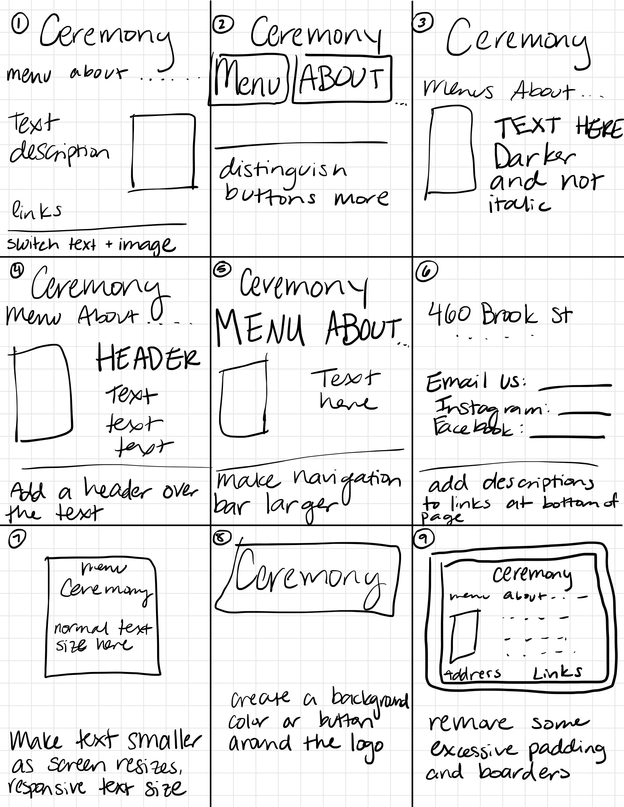
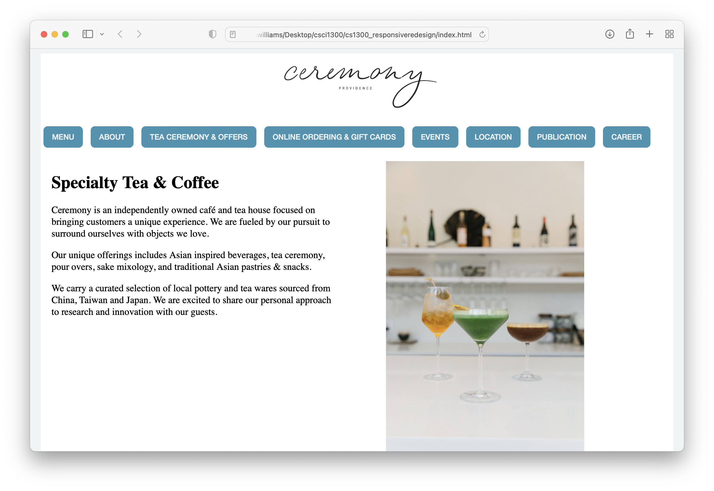

For this assignment, we had to redesign a website to make it more efficient and accessible to users. We had to go through the redesign process, identifying flaws in an existing interface, creating low-fidelty and high-fidelity prototypes for different screen sizes, and build a responsive website based on the prototypes. /p>
I chose to redesign the Ceremony PVD website to make the buttons more responsive to page size, as well as more obvious to the users that they are buttons. Additionally, I changed the formatting of the page to the F-shaped pattern to put the text on the left side of the page in the image on the right side, so that the user is easily able to navigate through the screen.
The following will demonstrate the redesign process I went through.
I chose Ceremony's website for this assignment because I have tried to navigate this webpage with some difficulty before.
Some flaws that I identified are as follows:
Some accessibility problems I identified are:
I agree with some of the problems detected. I would add a header and increase the text size of the navigation bar. I also would include alt text for images.
The next part of the assignment was to do 9, 1 minute sketches to come up with some different ideas for redesigning the page.
After doing these speed sketches, I created a final sketch of what I wanted to website to look like, combining ideas from the sketches to establish this final sketch.

Some elements that I chose for the final sketch were creating buttons that were more recognizable as buttons by putting boxes around them, adding a header of some kind, switing the text and the images, and making the links at the bottom of the page more recognizable.
Next, I created some low-fiedlity wireframes for different screen sizes. I chose to implement a collapsable menu for both the mobile phone and tablet sized screens.

This design has a navigable menu that includes the links to the different pages of the website. Also, it is arranged where the information is at the top and you have to scroll down for less relevant information. Additionally, you do not lose any content left to right and everything fits cleanly on one page. Each box represents a flexbox with responsive units that fit to the size of the screen.

This format for the tablet has similar features of the mobile wireframe, but it is organized a little differently to fit the bigger screen. It still has a menu that you can click on to see all of the different buttons that lead to other pages. If it keeps the links like the webpage, then it would not fit the screen well and you would have to scroll left to right to access all of the different pages. In this way, everything is laid out vertically, allowing users to scroll to access all information. It also is in a logical order from most to least relevant information. Each box represents a flexbox with responsive units that fit to the size of the screen.

The desktop wireframe implements the F style of organizing information, putting the navigation menu across the top then following with important text on the left and a less relevant image on the right. It also lists the links to contact them at the bottom of the page in a footer. Each box represents a flexbox with responsive units that fit to the size of the screen. It also will use a grid to organize the content between the header and footer.
Before creating high-fidelity prototypes based off of the low-fidelity wireframes, I created a style guide in Figma that would govern what each element would look like. Some design choices I made were easily readable fonts,

In Figma, I created three high-fidelity wireframes for a mobile device, tablet, and desktop.


After creating the high-fidelity wireframes, I created the HTML and CSS for the redesigned website. You can access the website here. Below is a picture of what the website I designed looks like:
This process allowed me to gain valuable insights on how to begin and move through the redesign process of an interface. Next time, something I would do differently is spend more time on the high-fidelity wireframes to make creating the HTML and CSS for the interface a little easier.
I wish I was able to make a menu that was clickable when the screen got smaller than 800px. This would have made the page more responsive. Something else I found difficult to implement was centering the image on the right side of the body of the page.